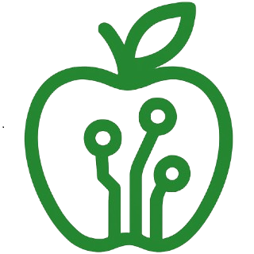

Login
Sign up for free

Food Nutrition AI
Your personal AI nutrition coach
Weight Loss
Loss
Muscle Gain
Muscle
Vegetarian
Veg
Meal Prep
Prep
Get personalized nutrition plans with visual progress tracking
Food Nutrition AI
Free Plan
Toggle Sidebar
CN
Food Nutrition AI
Your personal AI nutrition coach
Weight Loss
Loss
Muscle Gain
Muscle
Vegetarian
Veg
Meal Prep
Prep